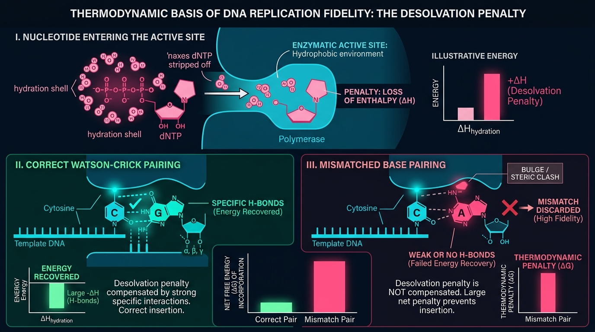
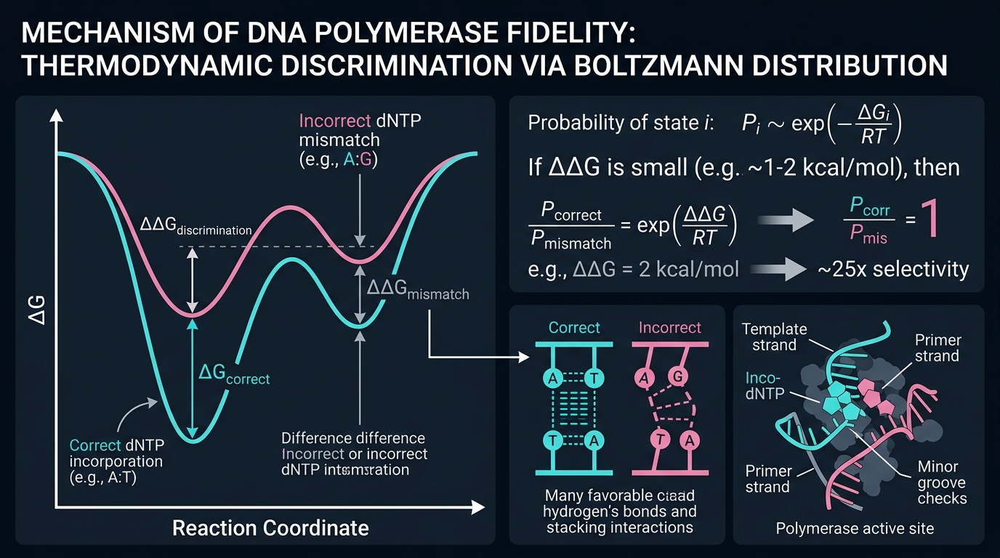
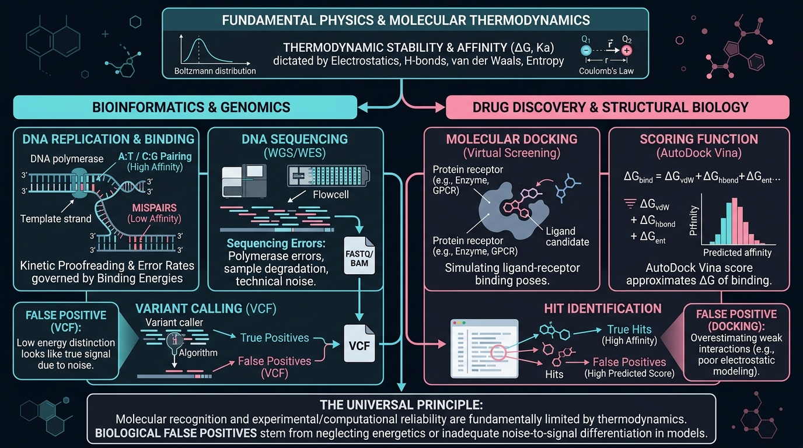

The Physics of Base Pairing
Nucleotide selection isn't magic. It is a strict mathematical consequence of atomic geometry, electrostatics, and thermodynamics.
1. The Atomic Reality
At the fundamental level, DNA polymerase doesn't "read" A, T, G, or C. It simply provides an environment where electrostatic forces govern molecular interaction.
Hydrogen bonds form when a highly electronegative atom (like Oxygen or Nitrogen) pulls electron density away from a Hydrogen atom, creating a partial positive charge ($\delta+$). This $\delta+$ is electrostatically attracted to the lone pairs ($\delta-$) of another electronegative atom. The strength of this attraction is dictated by Coulomb's Law.
Because the force drops exponentially with distance and angle, hydrogen bonds are highly directional. A linear ($180^\circ$) geometry maximizes orbital overlap and attractive force. Even a slight angular distortion in a mismatched base pair significantly weakens the bond.

2. The Hydration Shell
In the nucleus, DNA and free nucleotides are never dry. They are entirely surrounded by bulk water. Because water is highly polar, it immediately forms structured hydrogen-bond networks around every exposed polar atom on the nucleotide.
This organized layer is called a Hydration Shell. While this restricts the movement of water molecules (lowering entropy, $\Delta S < 0$), the sheer number of favorable hydrogen bonds makes the nucleotide incredibly stable in solution.

3. The Desolvation Penalty
Before a nucleotide can enter the hydrophobic active site of DNA polymerase, it must shed its "winter coat" of water. Breaking these pre-existing water bonds costs energy. This thermodynamic cost of admission is called the Desolvation Penalty.
If the nucleotide forms a correct Watson-Crick pair, it creates perfect new hydrogen bonds, releasing enough enthalpy ($\Delta H$) to pay back the penalty. However, if an incorrect mismatched base enters, it pays the penalty to strip the water, but its distorted geometry prevents it from forming strong new bonds. It goes energetically bankrupt.

4. The Mathematical Decision
How does a slight energy difference result in DNA polymerase rejecting a mismatch? The answer lies in the Boltzmann Distribution.
The difference in free energy between a correct pair and an incorrect mismatch is $\Delta\Delta G$. The probability of a state existing is proportional to $e^{-\Delta G / RT}$. Because the energy term is in the exponent, even a tiny $2 \text{ kcal/mol}$ difference in $\Delta\Delta G$ translates into a massive, exponential difference in binding probability. The enzyme doesn't actively "decide"—it simply lets thermal physics do the filtering.

5. The Universal Principle
The physics of base pairing is not just a biological curiosity—it is the foundational axiom of computational biology and drug discovery.
When a bioinformatician looks at a false-positive variant call in a VCF file, they are looking at the downstream mathematical consequence of an unfavorable $\Delta\Delta G$ during sequencing or replication. When a structural biologist uses AutoDock Vina to score a cancer drug, the software is literally just estimating the exact same hydrogen-bond enthalpies and desolvation penalties we see in DNA polymerase.
Everything in molecular biology eventually reduces to energy.
